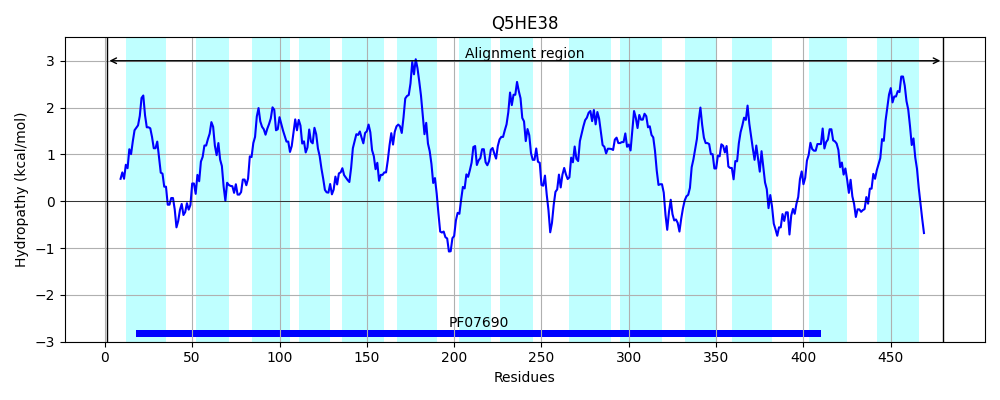

Hit Accession: Q5HE38
Hit TCID: 2.A.1.3.39
Hit Description: gnl|BL_ORD_ID|14369 gnl|TC-DB|Q5HE38|2.A.1.3.39 Drug resistance transporter, EmrB/QacA subfamily OS=Staphylococcus aureus (strain COL) GN=SACOL2157 PE=4 SV=1
Mach Len: 480
e:0.000000
Query TMS Count : 14
Hit TMS Count: 14
TMS-Overlap Score: 15.750000
Predicted Substrates:CHEBI:8984;sodium dodecyl sulfate, CHEBI:9731;trimethoprim, CHEBI:6477;linezolid, CHEBI:3603;chloramphenicol
BLAST Alignment:
Score: 2359 , Bit scores: 913 bits, E-value: 0.0e+00, Alignment length: 480, Percentage identity: 100
Query: 1 MAKVELTTRRRNFIVAVMLISAFVAILNQTLLNTALPSIMRELNINESTSQWLVTGFMLVNGVMIPLTAYLMDRIKTRPLYLAAMGTFLLGSIVAALAPNFGVLMLARVIQAMGAGVLMPLMQFTLFTLFSKEHRGFAMGLAGLVIQFAPAIGPTVTGLIIDQASWRVPFIIIVGIAILAFVFGLVSISSYNEVKYTKLDKRSVMYSTIGFGLMLYAFSSAGDLGFTSPIVIGALILSMVIIYLFIRRQFNITNALLNLRVFKNRTFALCTISSMIIMMSMVGPALLIPLYVQNSLSLSALLSGLVIMPGAIINGIMSVFTGKFYDKYGPRPLIYTGFTILTITTIMLCFLHTDTSYTYLIVVYAIRMFSVSLLMMPINTTGINSLRNEEISHGTAIMNFGRVMAGSLGTALMVTLMSFGAKIFLSTSPSHLTATEIKQQSIAIGVDISFAFVAVLVMAAYVIALFIREPKEIESNRRKF 480
MAKVELTTRRRNFIVAVMLISAFVAILNQTLLNTALPSIMRELNINESTSQWLVTGFMLVNGVMIPLTAYLMDRIKTRPLYLAAMGTFLLGSIVAALAPNFGVLMLARVIQAMGAGVLMPLMQFTLFTLFSKEHRGFAMGLAGLVIQFAPAIGPTVTGLIIDQASWRVPFIIIVGIAILAFVFGLVSISSYNEVKYTKLDKRSVMYSTIGFGLMLYAFSSAGDLGFTSPIVIGALILSMVIIYLFIRRQFNITNALLNLRVFKNRTFALCTISSMIIMMSMVGPALLIPLYVQNSLSLSALLSGLVIMPGAIINGIMSVFTGKFYDKYGPRPLIYTGFTILTITTIMLCFLHTDTSYTYLIVVYAIRMFSVSLLMMPINTTGINSLRNEEISHGTAIMNFGRVMAGSLGTALMVTLMSFGAKIFLSTSPSHLTATEIKQQSIAIGVDISFAFVAVLVMAAYVIALFIREPKEIESNRRKF
Sbjct: 1 MAKVELTTRRRNFIVAVMLISAFVAILNQTLLNTALPSIMRELNINESTSQWLVTGFMLVNGVMIPLTAYLMDRIKTRPLYLAAMGTFLLGSIVAALAPNFGVLMLARVIQAMGAGVLMPLMQFTLFTLFSKEHRGFAMGLAGLVIQFAPAIGPTVTGLIIDQASWRVPFIIIVGIAILAFVFGLVSISSYNEVKYTKLDKRSVMYSTIGFGLMLYAFSSAGDLGFTSPIVIGALILSMVIIYLFIRRQFNITNALLNLRVFKNRTFALCTISSMIIMMSMVGPALLIPLYVQNSLSLSALLSGLVIMPGAIINGIMSVFTGKFYDKYGPRPLIYTGFTILTITTIMLCFLHTDTSYTYLIVVYAIRMFSVSLLMMPINTTGINSLRNEEISHGTAIMNFGRVMAGSLGTALMVTLMSFGAKIFLSTSPSHLTATEIKQQSIAIGVDISFAFVAVLVMAAYVIALFIREPKEIESNRRKF 480 | Protein Hydropathy Plots: |
|---|
|  |
Pairwise Alignment-Hydropathy Plot:
|
|---|
|